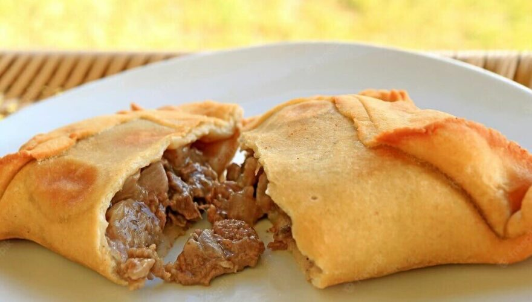

Empanada

The preferred dish on chile national holiday
This is the most famous and traditional variation; the empanada de pino.
Many countries have his own empanada, but the the characteristic of chilean empanada is it filled with pino.
ingredients:
Servings: 5
For the empanada dough
- 330 grams of wheat flour
- 1 tablespoon baking powder
- 50 ml of water
- 2 egg yolk
- 40 ml bacon fat
For the pino
- 300 grams of buttock meat
- 2 onions
- 2 hard-boiled eggs
- 5 olives
- mix the flour with baking powder, and make a hole in the middle and put the bacon fat and water.
- With the fingertips, mix slowly the ingredients until have a uniform form. Leave it with a towel around 15 minutes.
- For the pino, cut the onios and the meat on cubes. Remember to cook the eggs.
- In a pan with oil, put the onion and meat.
- Cut the eggs on 6 parts.
- Divide the dough on 5 parts and knead it. Put 2 eggs, one olive and part of the meat. Then wrap it.
- Leave it on the oven in 200º celsius for 40 minutes.